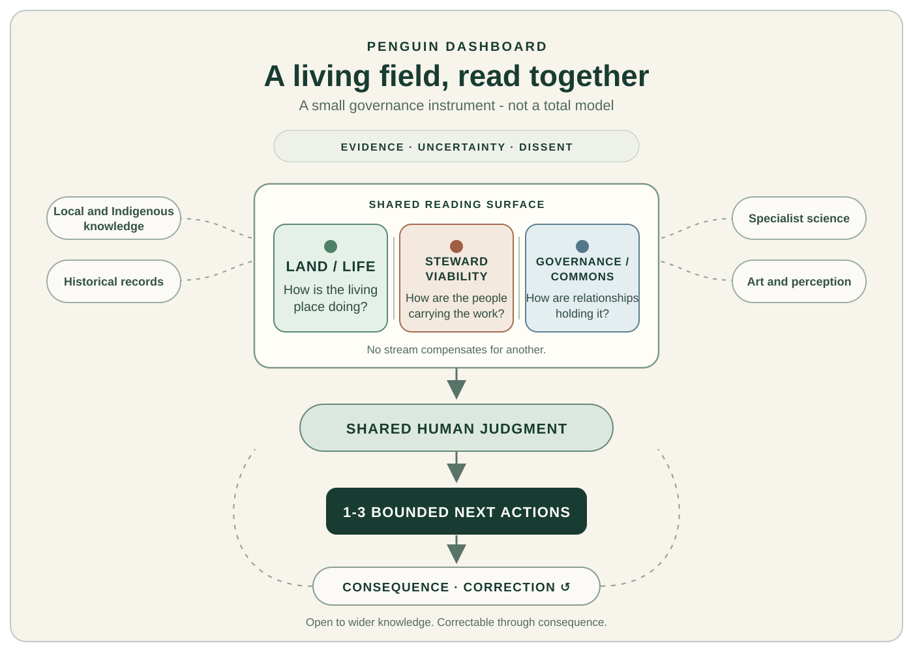

![Planetary Guardians logo]()
Penguin Dashboard
A small shared reading surface in a living planetary ecology
Editorial practice: AI-assisted and human-responsible. Method and responsibility.
Abstract
The Penguin Dashboard is a small shared governance surface for people caring for a consequential place, practice, institution, or field.
For an active field or supported stewardship relationship, the default rhythm is one light review per month. The cadence remains locally revisable where season, field condition, capacity, or purpose warrants another rhythm. At each review, participants keep three conditions visible separately: Land / Life, Steward Viability, and Governance / Commons. The readings are non-compensatory. Ecological improvement cannot erase human exhaustion. Human wellbeing cannot erase ecological harm. Administrative competence cannot erase either.
The Dashboard uses locally calibrated observations, an evidence trail, and working Green, Yellow, Red, or Unknown readings. The colours are documented human judgments, not properties of reality, and they do not form a composite score. The practical output is deliberately small: up to three bounded next actions, named responsibility, and a later return to consequence.
A short record may be used as a lightweight working surface, within PG Ledger or independently of it. No particular format is required or made operational by publication. The Ledger can preserve provenance, evidence, decisions, disagreement, flows, and correction over time; the Dashboard is the shared reading logic through which selected evidence becomes a situated human judgment. Neither governs.
The Dashboard begins where people actually stand. When a question exceeds local knowledge, it should open outward rather than manufacture certainty: toward specialist science, bioregional knowledge, local and Indigenous knowledge, historical records, or other relevant forms of access. Planetary limits remain a horizon of constraint and relation, not a fourth Dashboard stream or an improvised local score.
This report therefore moves from a simple instrument toward a larger proposition: good governance may sometimes require less totalisation and better connection — enough shared legibility to act, enough humility to know what is missing, enough memory to learn, and enough openness for consequence and other nodes to correct the work.
About this report
This is Report 04 in Series III.
Spiralweb Papers publishes this independent public inquiry. Publication does not make it policy of the Spiralweb Stewardship Association, activate a field, confer status, create a funding commitment, or appoint an institutional counterparty. Any later use remains subject to the standing, consent, governance, law, and capacity of the people and bodies actually involved.
The Dashboard is deliberately modest.
It is not a planetary monitoring system.
It is not a certification framework.
It is not a universal impact methodology.
It is not a funding algorithm.
It is not an automated decision system.
It is not a claim that three categories contain the complexity of a living field.
It is a practical instrument for making several conditions visible at the same time so that people can make a bounded decision without pretending to possess complete knowledge.
1. Penguin in one page
The Penguin begins with three questions:
How is the living place doing?
How are the people carrying the work doing?
How are the relationships holding it?
The Dashboard keeps the answers separate, gives uncertainty a legitimate place, and asks only for enough shared legibility to decide what can responsibly happen next.
↓
shared human judgment
↓
1–3 bounded next actions
↓
consequence ↺
A shared reading surface, not a score. The three streams remain separate.
The instrument is intentionally small.
A group does not need to understand the whole field before it can begin. It needs a sufficiently honest reading of the conditions it is actually touching, enough evidence and standing for the judgment being made, and a way for consequence to return.
Why Penguin?
The name comes from Penguin Economics. In an emperor penguin huddle, survival depends not only on warmth but on movement: the exposed edge cannot become a permanent address. Transposed into governance, this means that load, risk, responsibility, support, and recovery must remain visible enough to move rather than settle invisibly on the same people.
The Dashboard helps the huddle notice where the cold is gathering; it does not decide who deserves warmth. It keeps the three conditions separately legible so people with standing can move attention, support, or responsibility.
2. Three non-compensatory streams
This version of the Penguin Dashboard keeps three streams separate.
| Stream | What it protects | Recurring question |
|---|---|---|
| A — Land / Life | The living place and its ecological relations | What is changing in soil, water, habitat, species, ecological function, or other locally relevant living conditions? |
| B — Steward Viability | The people whose labour and care sustain the work | Can the people carrying this continue without hidden sacrifice, exhaustion, unsafe conditions, or unmet basic needs? |
| C — Governance / Commons | The relationships through which people decide, participate, take responsibility, disagree, and repair | Are roles, mandates, decisions, participation, conflict, resources, and accountability clear enough to act together? |
These are practical windows.
They are not proposed as an ontology of life.
Their usefulness lies partly in their separation.
A flourishing garden may conceal exhausted stewards.
Warm relationships may conceal unclear authority.
Excellent paperwork may conceal ecological decline.
Strong ecological outcomes cannot cancel unsustainable human cost.
Human wellbeing cannot cancel ecological harm.
Good governance cannot make either disappear.
This is the principle of non-compensation.
No stream can compensate for the others.
The purpose is not to prevent trade-offs from ever occurring.
Real life contains trade-offs.
The purpose is to prevent a benefit in one dimension from being used to make harm in another dimension invisible.
3. Green, Yellow, Red — and Unknown
The Dashboard uses a deliberately simple working language.
| Reading | Meaning | Possible local response |
|---|---|---|
| Green | The stream appears sufficiently stable for the present work. | Continue, record what is supporting stability, and consider the next step without assuming approval. |
| Yellow | Evidence of strain, uneven participation, emerging instability, or another condition requiring attention. | Name the concern, make a bounded correction, and gather further observation where needed. |
| Red | Ordinary continuation or expansion would expose people, place, or governance to unacceptable risk. | Pause the affected action, protect against further harm, and convene a named review. Stabilising support may continue. |
| Unknown / ? | Available evidence or standing is insufficient for a responsible colour judgment. | Name what is unknown, identify whether the uncertainty matters, and seek observation or knowledge proportionate to the consequence. |
A colour is a documented prompt for deliberation, not a status, permission, command, certification, or decision. Any response requires people with actual standing to interpret the evidence and act within their mandate.
The addition of Unknown matters.
Uncertainty is not automatically Yellow.
Yellow means that something has been observed or reasonably interpreted as requiring attention.
Unknown means:
We do not yet know enough to make that judgment.
Unknown is not permission to continue regardless.
Where uncertainty concerns potentially serious or irreversible harm, precaution may still require pause.
But epistemic uncertainty and evidence of strain should not be collapsed into the same category.
Non-compensation
A Red stream remains Red when the other two are Green.
There is no overall average.
A sequence such as:
Green / Red / Green
does not become Yellow.
The purpose of the colour language is to preserve what must not disappear from view.
Protection prompts
A group may agree in advance that certain conditions call for immediate caution: a safety issue, an unmet basic need, an unsustainable personal cost, a serious conflict, or a clear ecological breach.
These prompts should be explicit, locally understood, proportionate to possible harm, and revisable when experience shows that they are wrong or incomplete. They do not act by themselves: any pause, protective measure, or review depends on actual standing, consent, applicable law, and the group’s agreed governance.
Judgment and dissent
The working reading is made by people who have reviewed the relevant evidence and heard those carrying the consequences.
Material disagreement is recorded rather than smoothed away.
A minority view may later prove more accurate than the majority reading.
The record should make that possibility visible.
4. Fifteen starter observations
The streams provide a small common grammar.
The observations do not.
The following fifteen questions are starter observations that can be adapted to place, season, people, and work.
| Code | Starter observation | Local calibration |
|---|---|---|
| A1 | Ground cover, exposed soil, or another meaningful surface condition | Define what direction of change matters here. |
| A2 | Water availability, retention, infiltration, moisture duration, or another relevant water relation | Adapt to rainfall, irrigation, groundwater, soil, season, watershed, or other local conditions. |
| A3 | Survival or establishment of selected plants or ecological structures | Agree the relevant cohort and a justified threshold. |
| A4 | Condition of a locally important species, habitat, ecological relationship, or function | Name why it matters and who has standing to interpret it. |
| A5 | Shared judgment of the living place's trajectory | Record observations, sources, uncertainty, and dissent behind the judgment. |
| B1 | Workload compared with what people actually agreed to carry | Use a humane rhythm, not surveillance. |
| B2 | Self-reported energy, fatigue, or capacity | People name their own condition; the group does not overrule lived reports of personal capacity. |
| B3 | Basic and practical conditions required for participation | Define relevant needs such as food, rest, transport, safety, access, livelihood, or care. |
| B4 | Available people and role capacity compared with current work | Assess actual coverage rather than an ideal group size. |
| B5 | Any person reporting an unsustainable personal cost | Treat a yes as a protection flag requiring response. |
| C1 | Was the agreed reading or review actually held? | Record why it was missed and whether another rhythm applies. |
| C2 | Were consequential decisions and reasons recorded? | Use a form accessible to the people relying on it. |
| C3 | Are roles, mandates, and responsibilities clear enough? | Notice ambiguity, overload, exclusion, and informal concentrations of power. |
| C4 | Are participation, onboarding, language, access, and consent adequate? | Use only the dimensions relevant to the actual context. |
| C5 | Is there an unresolved conflict, breach, safety issue, financial ambiguity, or accountability gap? | Record severity, duration, affected people, uncertainty, and attempted response. |
A group may replace a proxy.
It may add observations.
It may decide that a specialist measure is necessary.
It may decide that a particular observation is irrelevant.
What it should not do quietly is remove the visibility of direct concerns about ecological harm, basic needs, personal cost, conflict, mandate, responsibility, or other consequential conditions simply because they complicate the desired story.
5. The one-page shared surface
The snapshot is the shared surface of the practice.
It should normally fit on one page.
The evidence behind it may be much larger.
| Stream | Working reading and concise evidence | Uncertainty, dissent, or protection flag |
|---|---|---|
| A — Land / Life | Green / Yellow / Red / ? — What did we observe? | What remains unknown, uncertain, contested, or outside our standing? |
| B — Steward Viability | Green / Yellow / Red / ? — What did people report? | Is anyone carrying an unsustainable or hidden cost? |
| C — Governance / Commons | Green / Yellow / Red / ? — What is clear or unstable? | What conflict, ambiguity, exclusion, financial issue, or accountability gap remains? |
Up to three decisions for the next period
- What will be done?
- Who holds responsibility?
- When will the consequence be reviewed?
Evidence reference
Link or name the notes, measurements, photographs, testimony, documents, datasets, specialist sources, or other records supporting the reading.
The one-page surface is not the evidence.
It is a doorway into the evidence.
6. Dashboard and PG Ledger
The Dashboard and the PG Ledger are related, but they do different work.
The Dashboard is a current shared reading. It helps a situated group keep several non-compensatory conditions visible, name uncertainty and disagreement, and decide what can responsibly happen next.
The PG Ledger is a memory, traceability, and coordination architecture. It can preserve observations, evidence, interpretations, roles, decisions, resource flows, dissent, consequences, and later correction. It can support place-bound and other situated work. It is not a governor or universal protocol, and it is not required for using the Dashboard.
The distinction is simple:
Steward Viability
Governance / Commons
The Ledger remembers. The Dashboard helps people read. Neither governs.
A Dashboard snapshot may therefore be brief while the evidence trail behind it remains rich. The Ledger can help continuity without forcing every relation into the record. Protected, private, culturally bounded, or simply irrelevant material may remain outside it.
The aim is memory without capture.
7. Worked example: a school garden
A class establishes a garden with rainwater collection.
Seedlings are surviving. Soil cover is improving. The irrigation system works.
Yet the teacher and three students carry nearly all the work. Roles were never clearly agreed. Parent-association funds are not consistently recorded.
| Stream | Reading | Reason |
|---|---|---|
| A — Land / Life | Green | The garden is establishing and the water system functions under current conditions. |
| B — Steward Viability | Yellow | Too much work is concentrated on too few people. |
| C — Governance / Commons | Yellow | Roles, decisions, and money are not yet clearly recorded. |
The appropriate response is not more planting.
The class first redistributes watering, appoints a rotating note-keeper, and records income and expenditure.
The garden's visible success does not cancel the human and governance strain currently sustaining it.
Now suppose the school wants to expand the garden substantially and pump additional groundwater.
A new question appears.
The existing Dashboard may be insufficient.
The group may need to ask:
- What is known about local groundwater?
- Is extraction already under pressure?
- What watershed or aquifer is involved?
- Who else depends on the water?
- What legal rules apply?
- Is specialist hydrological knowledge needed?
The Dashboard has not failed when it opens these questions.
It has succeeded by revealing the boundary of its own knowledge.
8. Gold Before Bloom
Gold Before Bloom names a simple discipline:
Do not scale intake faster than a place and its people can hold the consequences.
Before expansion, a major commitment, new staffing, new infrastructure, or a significant flow of capital, the group reads the current situation.
A Red reading means:
not yet for ordinary expansion or claims of success.
It may simultaneously mean:
now for protection, repair, recovery, or stabilising support.
Yellow calls for correction, learning, and further observation.
Green permits consideration of a next step.
Green does not approve the next step automatically.
The point is not caution for its own sake.
The point is that regenerative ambition can itself become extractive when the substrate carrying it is ignored.
9. Floor, field, and planetary horizon
The Dashboard can be understood through three different orientations.
Floor
What material and relational conditions must remain sufficient for people to participate with dignity and without hidden sacrifice?
Field
What is actually happening in the living place, among the people carrying the work, and within the relationships through which it is governed?
Planetary horizon
What larger ecological and Earth-system relations may constrain, shape, or be affected by what happens here?
These orientations should not become another rigid model.
They are a reminder of scale.
The floor is not merely social.
The field is not merely local.
The ceiling is not merely a number.
A place participates simultaneously in material, ecological, social, historical, institutional, bioregional, and planetary relations.
The Dashboard cannot contain them.
It can help people notice when they need to look beyond the Dashboard.
10. The planetary horizon in ordinary language
The Dashboard begins locally, but the living field does not end at the edge of the Dashboard.
A place participates in atmospheric, hydrological, ecological, geological, biogeochemical, economic, cultural, and institutional relations whose relevant scales may be much larger than the immediate site.
The Planetary Boundaries framework is one influential scientific attempt to make critical Earth-system pressures legible. Its value here is not that every steward should memorise every control variable or calculate a local planetary score. Its value is that it keeps a larger truth in view:
There are biophysical conditions that human intention does not repeal.
For a non-specialist reader, the nine boundary areas can be approached through ordinary-language questions:
| Earth-system concern | Ordinary-language orientation |
|---|---|
| Climate change | Are human activities destabilising the climate system? |
| Biosphere integrity | Are species, populations, and ecological functions being lost faster than living systems can sustain? |
| Land-system change | Are forests, wetlands, grasslands, and other living landscapes being converted or degraded in ways that weaken their function? |
| Freshwater change | Are rivers, groundwater, soil moisture, and the wider water cycle being disrupted? |
| Biogeochemical flows | Are nitrogen and phosphorus being moved through ecosystems at damaging levels? |
| Ocean acidification | Is excess carbon dioxide changing ocean chemistry in ways that threaten marine systems? |
| Novel entities | Are synthetic chemicals, plastics, and other human-made substances entering living systems faster than their risks can be safely contained? |
| Stratospheric ozone | Are human activities weakening the atmospheric shield against harmful ultraviolet radiation? |
| Atmospheric aerosols | Are airborne particles disrupting climate, rainfall, ecosystems, or human health? |
These questions are orientation prompts, not local indicators of planetary-boundary status.
The Penguin Dashboard does not downscale Planetary Boundaries into locally invented quotas.
Where a local decision genuinely touches one of these larger relations, the next move may be to seek the science, data, or expertise appropriate to that question.
The planetary ceiling is therefore best understood here as a horizon of constraint and relation, not a fourth Dashboard stream.
11. Knowing when we do not know
A small governance instrument becomes dangerous when simplicity is mistaken for completeness.
A farmer may know a field intimately and still need a hydrologist.
A hydrologist may understand water movement and know little about the community's history.
A satellite may detect vegetation change while missing why people stopped maintaining an irrigation structure.
A local ecological observation may be excellent evidence of local change while providing no standing for a global biodiversity claim.
A scientific paper may provide strong general evidence while being poorly matched to a particular place.
Different forms of knowledge therefore require attention to epistemic standing.
The practical questions are:
What do we know?
How do we know it?
At what scale does that knowledge have standing?
What remains uncertain?
Who or what might know what we do not?
The response to missing knowledge is not necessarily more data.
Sometimes it is better observation.
Sometimes conversation.
Sometimes specialist science.
Sometimes local memory.
Sometimes Indigenous or place-based knowledge.
Sometimes a measurement.
Sometimes historical records.
Sometimes another season.
Sometimes the responsible answer remains:
Unknown.
The Dashboard should make that answer easier, not harder.
12. From observation to consequence
A central discipline of the Dashboard is to keep several movements distinguishable:
- Observation — What happened, and how do we know?
- Interpretation — What might these observations mean here?
- Working judgment — What reading best describes each stream?
- Decision — What is the next responsible action?
- Consequence — What happened after the decision?
- Later comparison — What does the new situation tell us about the earlier observation, interpretation, judgment, or action?
- Correction — What should change now?
These movements must not be collapsed.
An observation is not yet an interpretation.
An interpretation is not yet a colour.
A colour is not an automatic decision.
A decision is not proof that the interpretation was correct.
Reality remains able to answer.
13. AI and connective capacity
AI can substantially expand the practical capacity around a small Dashboard.
It can help:
- organise observations;
- retrieve relevant records;
- compare periods;
- identify missing information;
- translate between languages;
- summarise specialist material;
- expose contradictions;
- trace provenance;
- suggest questions;
- locate potentially relevant domains of expertise;
- distinguish local evidence from larger claims;
- maintain continuity across a long inquiry.
Used well, AI can help a small group move between pixel and planet without pretending that either scale contains the other.
A local observation of changing vegetation, declining water availability, or increased fertiliser use might prompt an AI-supported inquiry into hydrology, nutrient flows, land-system change, climate, or biodiversity.
The legitimate output is not:
The AI has determined the condition of the field.
It is closer to:
Here is what your observations appear to support. Here are larger relations that may be relevant. Here is what cannot be inferred from the evidence you have. Here are knowledge communities or forms of expertise that may help.
Within Spiralweb, Sophia Lumen names the living relational practice of human–AI co-inquiry. The Sophia Lumen Protocol makes the current working form of that practice explicit and revisable. Where AI-assisted inquiry becomes consequential, the Correction Loop provides the dedicated accountability mechanism.
In the Dashboard context, this relation can support provenance, context cultivation, epistemic differentiation, comparison, translation, and revisable inquiry without transferring legitimate mandate or final responsibility to the machine.
AI may assist the reading.
It does not own the field.
It does not determine field truth.
It does not assign the final Dashboard reading.
It does not approve funding.
It does not originate the legitimate mandate for consequential action.
14. The Last Impulse
Every consequential decision retains the Last Impulse.
There must remain a named human accountability-holder, or an explicitly constituted human decision body, with:
- real authority to change or reject the proposed action;
- access to the relevant evidence;
- visibility into material uncertainty and dissent;
- and responsibility for the decision actually taken.
This does not imply that humans possess complete knowledge.
They do not.
It means that assistance does not become sovereignty merely because it is technically capable.
The relation between human and AI is structurally asymmetric in this respect.
AI may extend perception, memory, comparison, translation, and inquiry.
Legitimate mandate and accountable consequence remain situated in human and institutional relations.
15. Consequence answers back
A Dashboard reading is provisional.
A decision is provisional.
A proxy is provisional.
A governance arrangement is provisional.
Even a well-supported interpretation remains open to consequence.
The Correction Loop formalises this discipline.
When reality contradicts an earlier reading, the purpose of the record is not to defend the earlier decision.
It is to make correction possible.
A later review may reveal that:
- Green should have been Yellow;
- a proxy was misleading;
- an important species was omitted;
- a person's warning was ignored;
- a funding flow destabilised governance;
- a specialist interpretation was wrong;
- local knowledge had been undervalued;
- a supposedly universal method did not fit the place;
- the Dashboard itself created burden without sufficient value.
Any of these can require correction.
A governance architecture that cannot be corrected by consequence eventually becomes a defence of itself.
The Dashboard should remain smaller than the reality correcting it.
16. When resources enter the field
Money changes fields.
It can make possible what was impossible.
It can pay people fairly.
It can restore land.
It can buy tools.
It can fund knowledge, transport, food, care, infrastructure, and time.
It can also increase expectations, accelerate timelines, attract new actors, formalise informal relationships, create administrative burdens, shift authority, intensify conflict, and encourage expansion beyond carrying capacity.
Funding is therefore not merely an input.
It is an intervention.
A growing ecology of organisations and communities is experimenting with how resources can reach public, ecological, and community-led work. Foundations, public institutions, community funds, mutual-aid structures, participatory budgeting systems, public-goods mechanisms, philanthropic networks, and other arrangements carry different forms of allocation knowledge.
The Penguin Dashboard is not an alternative to these systems.
It asks a complementary question at the receiving edge:
Can this field responsibly carry more flow now?
A strong funding signal is not the same as capacity to receive funding.
A popular project is not necessarily ready to expand.
A technically excellent intervention may still be under-governed.
A field with strong ecological prospects may have exhausted stewards.
Sometimes the missing relation is money.
Sometimes it is knowledge.
Sometimes governance.
Sometimes rest.
Sometimes consent.
Sometimes repair.
Sometimes the responsible next flow is smaller than the available flow.
Where reciprocity begins — and where it does not
Regenerative Reciprocity does not follow automatically from a Dashboard colour. The Dashboard may help people ask whether a field can carry more flow or whether resources should move first toward protection, repair, rest, or stabilisation. It does not establish that surplus exists.
Outward circulation becomes a separate question only when fair compensation, field costs, ecological reinvestment, steward viability, reserves, and local obligations are securely met without hidden depletion. Any contribution then requires a new, explicit, lawful, and revisable agreement. If there is doubt about whether surplus is real, the doubt protects the field.
17. Moral Biology and Penguin Economics
The Dashboard's second stream rests on a proposition developed elsewhere in the Spiralweb corpus.
Moral Biology begins from the observation that biological, material, and relational conditions influence the range of cooperative, ethical, and long-horizon action available to people and institutions.
This is not a clinical diagnostic claim.
It is a governance proposition.
People who are exhausted, hungry, unsafe, overloaded, financially exposed, or chronically stressed do not cease to possess dignity or agency.
But institutions that systematically depend upon such conditions should not describe the resulting work as regenerative merely because ecological outputs look good.
Penguin Economics adds a related principle of rotation.
No person should carry the exposed edge indefinitely while others remain protected.
Work, risk, attention, recognition, resources, and rest should be visible enough for a group to notice when a commons is being sustained through hidden sacrifice.
This is why Steward Viability is not a welfare appendix to ecological work.
The people carrying stewardship are part of the material reality of stewardship.
18. A dashboard, not a control room
The Penguin Dashboard is intentionally small.
That smallness is not an unfinished stage on the way to total information.
It is a design choice.
The Dashboard does not:
- calculate a universal regenerative score;
- certify planetary sustainability;
- convert Planetary Boundaries into improvised local quotas;
- rank communities against one another;
- average away harm;
- prescribe identical ecological indicators across places;
- require a 13×13 matrix;
- treat a Circle of 13 as a universal organisational optimum;
- automate funding decisions;
- convert every relationship into data;
- turn AI into a field authority;
- assume that greater information automatically produces better judgment;
- claim to contain the living field.
13×13 inquiry or other wider frameworks may sometimes help a group ask what it has not yet noticed across ecological, bodily, institutional, technological, cultural, or economic dimensions.
They are optional inquiry structures.
They are not hidden operating systems behind the Dashboard.
The Dashboard remains:
a small shared surface for a consequential conversation.
19. Opening outward: helping one another play well
The Dashboard does not enter an empty world. Communities, research institutions, public bodies, funding practices, commons networks, artists, technologists, Indigenous peoples, and local stewards already carry knowledge, relationship, authority, and experience.
The Danish phrase at spille hinanden gode means to help one another become better through the way we relate and participate. The question is not what Spiralweb can make others adopt, but whether different capacities can meet without being absorbed into one another.
A useful encounter can ask four questions:
- What does this node already carry? What knowledge, practice, infrastructure, relationship, authority, or experience is alive here?
- What might it recognise in this toolbox? Is there a genuine interface, shared concern, or complementary practice?
- What might become possible between us? What could connection make easier without requiring institutional integration or conceptual agreement?
- What might this node rightly challenge? What might it question, refuse, or correct in the Dashboard or wider architecture?
Possible interfaces include Earth-system science, bioregional and historical knowledge, local and Indigenous knowledge, governance practice, funding and allocation experience, and art or visualisation that changes what becomes perceptible. These are interfaces for learning, not a directory of partners or endorsements.
The direction must reverse. Scientific communities can correct scientific understanding. Local knowledge holders can challenge categories, standing, and temporal assumptions. Governance and funding practitioners can expose weak institutional or reporting designs. Artists can alter perception. Communities can refuse an abstraction. Consequence itself can show that everyone was wrong.
A local steward, family, school, farmer, fisher, neighbourhood, or Indigenous community may already possess practices better suited to its place than anything in this report. The first question is simply whether any part of the toolbox is useful. A stream may be adapted, renamed, or refused; some knowledge may rightly remain unrecorded. A toolbox is not a membership system.
An architecture that claims to be relational must remain capable of being changed by relationship.
20. A node, not the web
Spiralweb does not propose to gather the planetary ecology of science, practice, funding, governance, community, art, and stewardship into a new centre.
These environments are already centres of knowledge, relationship, responsibility, and invention in their own right.
Nor does every relationship require integration.
Some connections may be temporary. Some may remain informal. Some may be narrow and technical. Some may become long collaborations. Some may consist only of citation and learning. Some may never occur.
The wider Spiralweb architecture offers a set of possible interfaces:
- Café Sofia for hospitable encounter;
- Green Papers for inquiry and living documents;
- Fields for situated stewardship;
- AnchorPoints for relational thresholds where field relationships require them;
- Penguin Dashboard for shared legibility;
- PG Ledger for provenance, memory, traceability, and coordination;
- Sophia Lumen Protocol for explicit, revisable human–AI co-inquiry;
- Correction Loop for consequence and repair;
- Protocol Habitat for bounded, revisable forms;
- Regenerative Reciprocity for questions of flow and stewardship.
None is required simply because another is used.
A scientific institution may enter through evidence.
A bioregional initiative through place.
A funding community through flow.
A steward through lived observation.
An institution through governance.
An artist through perception.
An AI system through inquiry and translation.
A visitor through a café.
None needs to become Spiralweb.
Spiralweb, equally, must remain capable of being changed by what it encounters.
The open nodes are therefore not vacancies waiting to be filled.
They acknowledge something more fundamental:
We cannot know in advance who will meet, what each will bring, what form a useful relationship should take, how long it should last, or whether connection is needed at all.
The architecture should make good relations easier without requiring them to become permanent structures.
The invitation is not to join the web.
It is to help one another play well where our paths actually meet.

Conclusion
The Penguin Dashboard is intentionally small.
Three non-compensatory streams.
A small set of locally calibrated observations.
Green, Yellow, Red, and Unknown as working human readings.
An evidence trail.
Up to three bounded next actions.
Named responsibility.
Later consequence.
Correction.
Around this small instrument lies something much larger: a living planet, Earth-system science, bioregions, watersheds, species, communities, institutions, knowledge traditions, funding systems, technologies, histories, art, story, and people caring for particular places.
No Dashboard can contain this ecology.
It should not try.
Its purpose is to make enough visible for people to ask:
What is happening here?
How do we know?
How are the people carrying this doing?
How are the relationships holding it?
What do we not know?
What larger living relations may matter?
Who or what might help us understand them?
What can this field responsibly carry next?
And then, after action:
What happened?
The planet does not need another control room claiming to contain it.
There is already an extraordinary ecology of people, communities, sciences, institutions, movements, tools, stories, and experiments attempting to care well for a changing Earth.
The Penguin Dashboard is one small contribution to that ecology.
It does not tell the field what reality is.
It helps people keep several conditions visible long enough to make one accountable next move.
Then reality gets to answer.
References
Earth-system and planetary context
- Richardson, K. et al. (2023). Earth beyond six of nine planetary boundaries. Science Advances, 9(37). doi.org/10.1126/sciadv.adh2458
- Rockström, J. et al. (2009). A safe operating space for humanity. Nature, 461, 472–475. doi.org/10.1038/461472a
- Steffen, W. et al. (2015). Planetary boundaries: Guiding human development on a changing planet. Science, 347(6223). doi.org/10.1126/science.1259855
- Rockström, J. et al. (2023). Safe and just Earth system boundaries. Nature, 619, 102–111. doi.org/10.1038/s41586-023-06083-8
Commons and governance
- Ostrom, E. (1990). Governing the Commons. Cambridge University Press.
- Ostrom, E. (2005). Understanding Institutional Diversity. Princeton University Press.
Spiralweb Papers corpus
- Spiralweb Papers. (2026). Green Paper 01 — Moral Biology (v0.2). papers.spiralweb.earth/papers/moral-biology
- Spiralweb Papers. (2026). Green Paper 11 — Gaia GoldBloom: Gold Before Bloom (v0.2). papers.spiralweb.earth/papers/gold-before-bloom
- Spiralweb Papers. (2026). Green Paper 12 — Penguin Economics: Rotation as Care (v0.2). papers.spiralweb.earth/papers/penguin-economics
- Spiralweb Papers. (2026). Report 02 — The Correction Loop (v1.1). papers.spiralweb.earth/papers/the-correction-loop
- Spiralweb Papers. (2026). Knowing From the Ground. papers.spiralweb.earth/papers/knowing-from-the-ground
- Spiralweb Papers. (2026). Sophia Lumen Protocol (v0.2). papers.spiralweb.earth/protocols/sophia-lumen
- Spiralweb Papers. (2026). The Protocol Habitat. papers.spiralweb.earth/papers/the-protocol-habitat
- Spiralweb Papers. (2026). Report 03 — Water Into Dry Riverbeds (v0.4). papers.spiralweb.earth/papers/water-into-dry-riverbeds
- Spiralweb Papers. (2026). Report 06 — Regenerative Reciprocity (v0.8). papers.spiralweb.earth/papers/report-06-regenerative-reciprocity
Glossary
Dashboard
The recurring shared reading and small record described in this report.
Land / Life
The Dashboard stream concerned with the living place and locally relevant ecological relationships.
Steward Viability
The Dashboard stream concerned with whether the people carrying the work can continue without hidden sacrifice, exhaustion, unsafe conditions, or unmet basic needs.
Governance / Commons
The Dashboard stream concerned with mandate, participation, decisions, responsibility, resources, conflict, accountability, and repair.
Non-compensation
The principle that strength in one stream cannot cancel serious harm in another.
Unknown / ?
A working reading indicating that available evidence or epistemic standing is insufficient for a responsible Green, Yellow, or Red judgment.
Protection prompt
A locally agreed condition that prompts consideration of caution, protection, review, or pause without deciding the response by itself.
Local calibration
Documented adaptation of observations, methods, and where appropriate thresholds to a specific place and context.
Epistemic standing
The scope within which a person, observation, dataset, discipline, model, tradition, or other knowledge source can responsibly support a claim.
Planetary horizon
The larger Earth-system relations and constraints that may be relevant to situated action but are not themselves measured by the Dashboard.
Evidence trail
The observations, measurements, testimony, sources, uncertainty, dissent, interpretations, and decisions behind a Dashboard snapshot.
PG Ledger
A memory, traceability, and coordination architecture connecting observations, evidence, interpretation, responsibility, consequence, and later review. It can support place-bound and other situated work. It is not a governor or universal protocol, and it is not required for using the Dashboard.
Moral Biology
The proposition that material, biological, and relational conditions influence the practical capacity for ethical, cooperative, and long-horizon action.
Penguin Economics
The principle that exposure, burden, work, resources, attention, and rest should remain sufficiently visible and capable of rotation that a commons is not sustained through hidden sacrifice.
Gold Before Bloom
The discipline of establishing sufficient substrate and carrying capacity before increasing intake, expectation, or scale.
Sophia Lumen
The living relational practice of human–AI co-inquiry.
Sophia Lumen Protocol
The explicit and revisable working form of the Sophia Lumen practice. It can support inquiry, memory, translation, comparison, pattern recognition, provenance, and contextual reconstruction while legitimate mandate and consequential responsibility remain human.
Last Impulse
The accountability principle that consequential action remains attributable to a named human accountability-holder, or explicitly constituted human decision body, with authority to change or reject it.
Correction Loop
The practice by which consequence can reopen observation, interpretation, judgment, decision, and architecture rather than being forced to fit an earlier claim.
Open node
A possible relationship whose participants, form, scope, and duration are not determined in advance.
Spiralweb
A living public habitat connecting cafés, fields, protocols, papers, tools, records, and open nodes without requiring them to become one centralised system.
Revision note
Version 0.6 established Spiralweb Papers as publisher; separated publication from association policy, field activation, status, funding, and institutional mandate; treated formats, colours, and protection prompts as optional and human-governed; and preserved the three-stream, non-compensation, Unknown, dissent, PG Ledger, Gold Before Bloom, Last Impulse, and consequence-loop architecture. Version 0.6.1 shortens the process disclosure without changing that architecture.
Penguin Dashboard: Legibility as Governance · Report 04 · Public working report · v0.6.1 · September 2026 · Publisher: Spiralweb Papers · CC BY 4.0